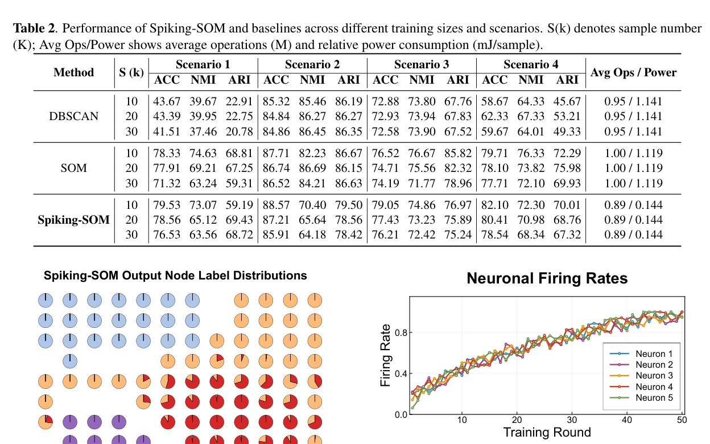

Paper brief
Spiking Self-Organizing Maps with Convergence Guarantees for Unsupervised Radar Signal Deinterleaving
ICASSP 2026 - 2026 IEEE International Conference on Acoustics, Speech and Signal Processing (ICASSP) · 19532-19536
Spiking-SOM moves self-organizing-map clustering into the spike domain and uses BMU firing rates for unsupervised radar pulse deinterleaving.
Research question
Radar deinterleaving must handle unknown labels, dense pulses, and limited edge computation, while conventional SOMs rely on continuous-domain distance computation.
Method
Spiking-SOM represents SOM units with LIF neurons, encodes PDW inputs as sparse spike tensors, selects BMUs by average firing rate, and updates weights in the spike domain with convergence analysis based on Robbins-Monro conditions.
Technical route
- Spike encoding
Encode PDW features into sparse temporal spike tensors.
- Neuron response
Accumulate membrane potential and firing responses in LIF units.
- BMU selection
Select the best matching unit by average firing rate.
- Topology update
Update BMU and neighborhood weights in the spike domain.
Evidence
- Learning
- Unsupervised
Deinterleaves radar pulses without manual labels.
- Theory
- Convergence
BMU monotonicity and Robbins-Monro conditions.
- Computation
- Sparse update
Arithmetic and memory access decrease with input sparsity.

Spiking SOM Deinterleaving Framework
The framework shows how BMU competition, spike responses and cluster updates form an unsupervised radar-pulse deinterleaving process.
It transfers SOM-style neighborhood competition into the spiking domain for event-driven sequence separation.
Source: ICASSP 2026 - 2026 IEEE International Conference on Acoustics, Speech and Signal Processing (ICASSP), 19532-19536 (2026). © 2026 IEEE.
View full-size figure

Multi-Scenario Performance Table
The table compares deinterleaving metrics under different pulse densities, distributions and overlap conditions.
The key result is that the model preserves useful clustering quality without supervised labels.
Source: ICASSP 2026 - 2026 IEEE International Conference on Acoustics, Speech and Signal Processing (ICASSP), 19532-19536 (2026). © 2026 IEEE.
View full-size figure
BMU Firing and Energy Analysis
The figure visualizes BMU responses and energy distributions across clusters.
It explains why firing activity can support self-organized separation of radar pulse sequences.
Source: ICASSP 2026 - 2026 IEEE International Conference on Acoustics, Speech and Signal Processing (ICASSP), 19532-19536 (2026). © 2026 IEEE.
View full-size figureTakeaway & limitations
SOM topology preservation can be combined with event-driven sparse SNN computation to support low-power unsupervised deinterleaving.
Moving competition and updates into the spike domain provides a method for studying event-driven computation and sparse learning in unsupervised deinterleaving.
- Moves BMU selection and neighborhood update from SOM to the spike domain.
- Provides monotonic firing-rate and convergence analysis for unsupervised SNN clustering.
- Targets edge radar processing through event-driven accumulation and sparse updates.
Read it together with SGTE-SNN: SGTE focuses on task-driven encoding, while this paper focuses on unsupervised topological organization.
Citation
Qi Sun, Shumo Yang, Zhen Cao, Shiqing Yang, and Biao Hou. Spiking Self-Organizing Maps with Convergence Guarantees for Unsupervised Radar Signal Deinterleaving. ICASSP 2026 - 2026 IEEE International Conference on Acoustics, Speech and Signal Processing (ICASSP), 2026, 19532-19536.
Download BibTeX